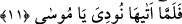

ona istediği sûretin dışında tecellî etseydi, o zaman dikkati matlûbunun üzerinde
toplandığı için ondan yüz çevirirdi. Çünkü o zaman matlûbu orada tecellî edenden
başka olmuş olurdu.
Mûsâ’nın ateşi gibi ki onu ihtiyacı gibi görür
O ilâhtır, lâkin (Mûsâ) O’nu bilmez
Yani Mûsâ nur sûretinde tecellî eden ve orada konuşan ilâhı tanıyamamıştır.
“Yâhut ateşin yanında bir yol gösteren bulurum” demişti.” Yâhudda ateşin yanında
bana yolu gösterecek birini bulurum. Çünkü bir ateş olup da yanında kimse
bulunmaması nerdeyse imkansızdır.
11. Ateşin yanına geldiği zaman kendisine seslenilmişti: “Ey Mûsâ!”
Gördüğü “Ateşin yanına geldiği zaman” İbn Abbas (r.anhümâ) demiştir ki: “Mûsâ
(a.s.) kökünden tepesine kadar beyaz bir ateşle kaplı yemyeşil bir ağaç gördü. Bu ağaç
kadar dünyada ışık veren başka bir şey olamazdı. Ağacın yanında kimseyi göremedi.
Ağaçtaki ateşin ışığının şiddetinden dolayı şaşkınlık içinde durakaldı. Çünkü ağaç
şiddetli bir ateş ve ışık saçmasına rağmen, ne ağacın rengi bozuluyor ne de ağacın suyu
ateşi zayıflatıyordu. Bu arada meleklerin tesbihlerini işitti. Gözleri kamaştıran büyük
bir nûr gördü. Gözlerini ovuşturdu, korktu ve şaşırdı. Onun üzerine sekînet ve itmi’nân
hâli indirildi. Sonra da ona seslenildi. Ağaç siyahımsı yeşil renkte, tekedikeni,
böğürtlen çalısı veya hünnap ağacı idi. Diğerlerinin aksine bu ateşi olmayan bir ağaçtı.
Ateşin dört çeşit olduğu söylenir. Birincisi, dünya ateşi olup yer fakat içmez (su onu
söndürür). İkincisi, yeşil ağaçların ateşi olup içer fakat yemez. Üçüncüsü, cehennemin
ateşi olup hem yer; hem de içer. Dördüncüsü ise Mûsâ (a.s.)’ın ateşi olup ne yer; ne de
içer.
Yine ateşin dört kısma ayrıldığı söylenmiştir. Birincisi cehennem ateşi olup ışığı
yoktur fakat yakma özelliği vardır. İkincisi, ışığı olup yakma özelliği olmayan Mûsâ
(a.s.)’ın ateşidir. Üçüncüsü, hem yakma hem de ışık verme özelliği olan dünyâ ateşidir.
Dördüncüsü ne yakıcı olan ne de ışık veren ağaçların ateşidir.
Fakir (Bursevî) der ki: Nûr muhabbet, ateş de aşk içindir. Mûsâ (a.s.)’ ın muhabbet
nûru kemâle erince kalbinde aşk ve şevk ateşi tutuştu. Allah da ona içindeki sûret üzere
tecellî etti. Şöyle ki Allâh’ın halîfesinin çocuğu olan kalb çocuğu varlık arzında soğuk
bir kış gecesi, yani bir celâl gecesinde doğunca ona zâtî nur, sıfâtî ateş sûretinde zuhûr
etti. Çünkü sûret, sıfatlar içindir. Ateş onun bütün benliğini yaktı ve ona vahdânî
teveccüh hâsıl oldu. İşte o zaman “kendisine seslenilmişti: “Ey Mûsâ.”